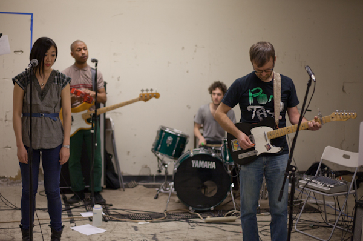
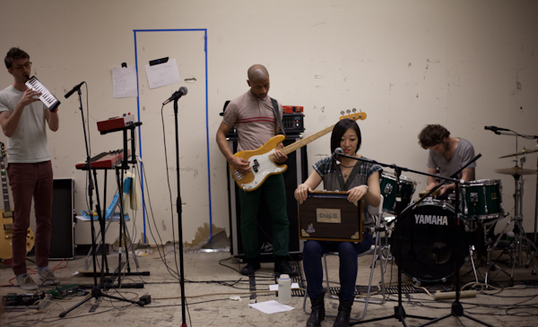
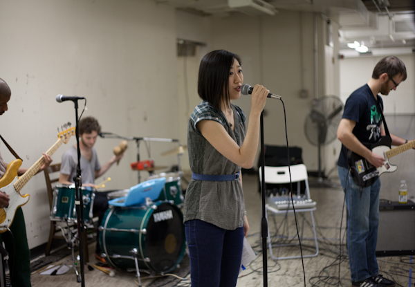

-
Gonna Die: Interview with Young Jean Lee
by Idiom March 24, 2011
Idiom spoke with playwright Young Jean Lee (The Shipment, Church) about her upcoming show We’re Gonna Die.
Idiom: So, what is We’re Gonna Die?
Young Jean Lee: We’re Gonna Die is a show I’m doing with the company 13P. This is a company of thirteen playwrights who each get to produce whatever play of theirs they want, serving as the artistic director for that production, and when all thirteen plays have been produced the company implodes. It’s an opportunity for playwrights to do something much riskier than they would ordinarily get to do. In my case, I have my own theater company so presumably I could be as risky as I wanted with every show I do. But actually that’s not the case. I can be a lot riskier than playwrights who aren’t self-producing, but I can’t be so risky that the company loses all of its funding and collapses. 13P doesn’t have to worry so much about that since collapsing is the plan, so they encouraged me to do something really super crazy. And when I thought about the craziest thing I could do, I imagined myself performing onstage, since I’m not a performer and am a very physically awkward person. And then I thought, “What would be the most extreme form of performance I could inflict on myself?” And the answer came: “A one-person cabaret show with singing and dancing.” So I booked eleven nights at Joe’s Pub and started putting together a rock band. The concept behind the show is that it’s something that any ordinary person should be able to perform, and I’m using myself as a guinea pig. All the songs and stories are about heartbreak, loneliness, aging, sickness, and death. We worried that the show would be too depressing, but last night we did a test run in front of an invited audience and everyone totally loved it and was laughing and gasping through the whole thing. My hope is that other people will start performing it, although traditionally the whole point of a cabaret show is that it can only be performed by one particular performer.
Idiom: So the songs are your songs? Did you generate all the material yourself?
YJL: Yes I wrote the lyrics and melodies, but my boyfriend Tim Simmonds (who plays guitar in Future Wife) helped me refine them, since I’m not a musician and they were all pretty crude to begin with. I would basically just sing a bunch of stuff into a recorder and he would turn it into a proper song. I’m good at chorus melodies but not so good with verse melodies, and I’m not a singer so I don’t know how to sing things interestingly and had to imitate Tim’s phrasing since he’s a real singer.
All the other musicians in the band (which also includes Michael Demsyn-Hanf, Nick Jenkins, and Ben Kupstas) are terrific singer/songwriters themselves and front their own bands, so it was kind of a dream to work with them. The band’s sound wouldn’t be what it was without them. Ben Kupstas brought in a bunch of cool instruments that made a big difference. I had heard so much about all the annoying things band members do to each other in rehearsal out of ego, but there was none of that. Everyone was constantly volunteering to not play on songs if they thought it would sound better without them. Being songwriters, everyone understood that the overall sound of the song was more important than their part in it. I remember once we all wanted to cut a chorus repetition, and Mike was the only one who wasn’t immediately enthusiastic, and we asked him why and he laughed and said, “Because I kind of liked the glockenspiel part I was playing during that section, but obviously that’s no reason to keep it” and that was it.
Idiom: Can you talk a little about how you see this piece dovetailing with, or departing from, you previous work?
YJL: It definitely deals with themes I’ve always been obsessed with, but it does so much more directly. And it’s all about storytelling. I’ve found that my lyrics are way more straightforward than my playwriting. I am incapable of being weird or poetic or avant-garde in any way when I’m writing songs – if I try, it feels incredibly wrong and fake. So far, it looks as if this show will be much more entertaining and accessible than my other shows, but at the same time more disturbing and unpredictable. It is similar to my other work in that I’m trying to do something specific to an audience to unsettle them and plant questions in their minds, but dissimilar in that it uses entertainment rather than weirdness to disorient them. Also I’m performing it myself, which has never happened before and will probably never happen again.
Photo: Kristianna Smith
Idiom: Do you miss working with actors at all?
YJL: I really miss directing. When we’re in band practice and I’m singing, I can’t resist the temptation to make Tim or my associate director Morgan sing my part for me so I can stand outside and watch. The band members are all so charismatic that all I want to do is stand outside and make them do crazy things the way I’m used to. I feel sorry for the director, Paul Lazar, for having to work with me, but he’s been unbelievably patient and generous.
Idiom: Will there be an afterlife to this project? Are you recording an album?
YJL: I hope so. I would love to record an album. Tim and I have been recording demos in his bedroom using garage band (the first one we did was “I’m Spending Christmas Alone” which we released before the holidays). We recently released our second demo, “We’re Gonna Die”. They’re very thrown-together with Tim playing most of the instruments and definitely sound like demos, so we’d love to get into a studio with the whole band and record proper tracks. The songs are catchy and people are always asking us for them, so at Joe’s Pub we’re going to do live recordings and make them available via weblink to people who want them. I think no matter what happens, Tim and I will keep doing music stuff together, just because it’s fun.
Idiom: Can you speak a little about the challenge of creating a theatrical arc within a concert setting?
YJL: This piece has more of a theatrical arc than any piece I’ve ever worked on. I take the audience on an emotional journey through pain and comfort that leads to a big catharsis.
Idiom: Is there anything in particular you want the audience to take away from this piece?
Photo: Kristianna Smith
YJL: Well, the themes are so dark, but the show itself is entertaining and funny, so I would hope that the themes stick with audience members, but in a comforting rather than traumatizing way. We’re working hard to strike the right balance. One of our assistants couldn’t sleep after listening to one of our songs because it freaked her out so much, so we are trying to avoid that. Pretty much everyone who has heard the songs has said that the lyrics have stuck with them, but we want this to be a positive thing. Also, I’d want people to leave with the sense that they themselves could be interesting onstage in their own way, based on seeing non-actors sing and dance and tell stories with sincerity and commitment. In a way the whole show is really about humility, both in form and content. Last night after our invited run-through, one person said, “I felt like it could have been me up there telling those stories” and another person said, “I felt comforted when it was over.” That’s what we want.